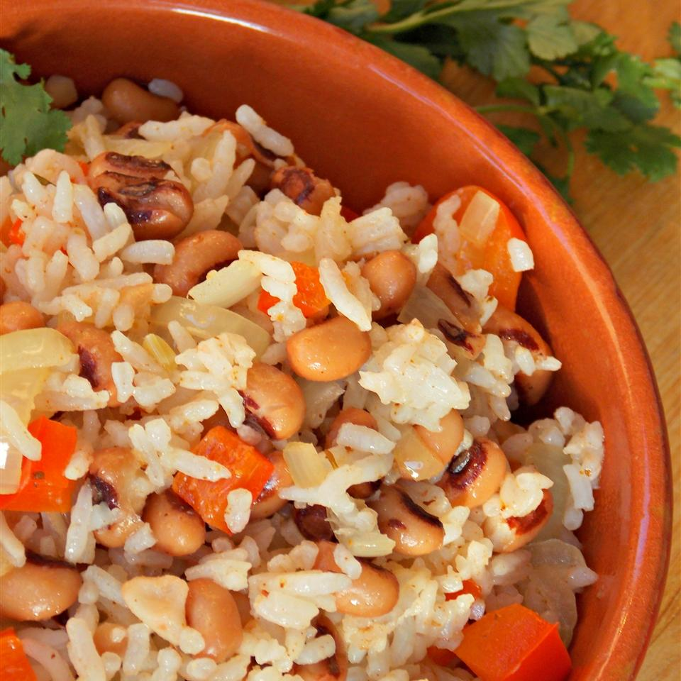

Hoppin' John

Description
Are you also not American and have absolutely no idea what Hoppin' John is?!
Read on to find out! It had 4/5 stars on allrecipes.com and was apparently accepted
to Harvard College Dining Services so it's probably good!
Ingredients
- 2 and 1/2 cups vegetable broth
- 1 cup long grain rice
- 2 tablespoons olive oil
- 1 onion, chopped
- 2 cans black-eyed peas, rinsed and drained
- 1/2 teaspoon cajun seasoning
Method
- Bring broth and rice to boil in a saucepan. Reduce heat to medium-low, cover, and
simmer until the rice is tender and liquid has been absorbed. This should take around 20
-25 minutes.
- Heat olive oil in a pot over medium-high heat. Saute onion in hot oil until translucent,
about 5-7 minutes.
- Stir in the rice, black-eyed peas, and Cajun seasoning.
- Cover the pot with a lid and cook until flavours blend, about 10 minutes.
- Et voila! Dinner is served.